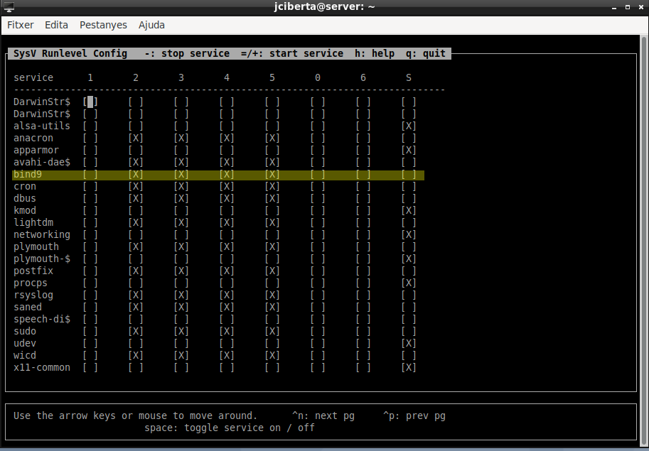
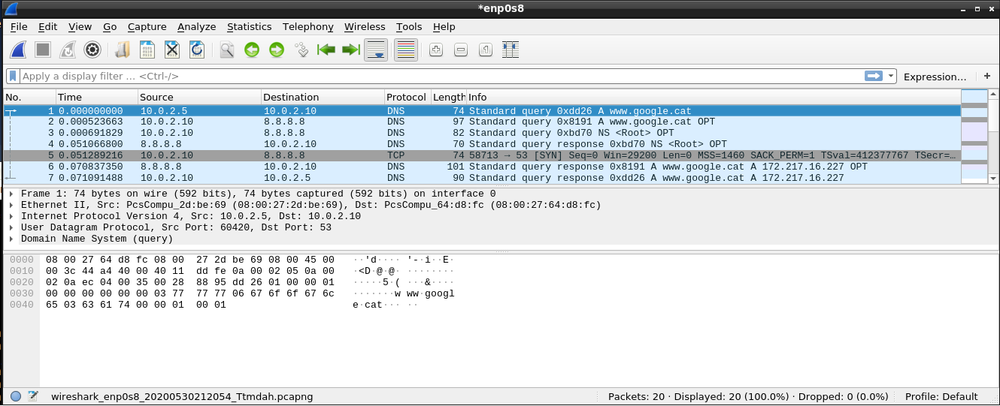

1. Instal·lació del servidor DNS BIND i els seus components.
Instal·lem el servidor amb la comanda apt-get:
[root@portatil ~]# apt-get install bind9
S'està llegint la llista de paquets… Fet
S'està construint l'arbre de dependències
S'està llegint la informació de l'estat… Fet
S'instal·laran els següents paquets extres:
bind9utils dns-root-data python3-ply
Paquets suggerits:
bind9-doc dnsutils resolvconf ufw python-ply-doc
S'instal·laran els paquets NOUS següents:
bind9 bind9utils dns-root-data python3-ply
0 actualitzats, 4 nous a instal·lar, 0 a suprimir i 0 no actualitzats.
S'ha d'obtenir 1136 kB d'arxius.
Després d'aquesta operació s'empraran 4116 kB d'espai en disc addicional.
Voleu continuar? [S/n]
Si volem veure les dependències del paquet principal:
[root@portatil ~]# apt-cache depends bind9
bind9
Depèn: adduser
Depèn: bind9utils
|Depèn: debconf
Depèn: <debconf-2.0>
cdebconf
debconf
Depèn: dns-root-data
Depèn: libbind9-161
Depèn: libdns1104
Depèn: libisc1100
Depèn: libisccc161
Depèn: libisccfg163
Depèn: liblwres161
Depèn: lsb-base
Depèn: net-tools
Depèn: netbase
Depèn: libc6
Depèn: libcap2
Depèn: libcom-err2
Depèn: libfstrm0
Depèn: libgeoip1
Depèn: libgssapi-krb5-2
Depèn: libjson-c3
Depèn: libk5crypto3
Depèn: libkrb5-3
Depèn: liblmdb0
Depèn: libprotobuf-c1
Depèn: libssl1.1
Depèn: libxml2
Suggereix: bind9-doc
Suggereix: dnsutils
Suggereix: resolvconf
openresolv
Suggereix: ufw
Per obtenir informació del paquet del servei bind (podem veure també les seves dependències):
root@portatil ~]# dpkg -s bind9
Package: bind9
Status: install ok installed
Priority: optional
Section: net
Installed-Size: 2145
Maintainer: Debian DNS Team <team+dns@tracker.debian.org>
Architecture: amd64
Version: 1:9.11.5.P4+dfsg-5.1
Depends: adduser, bind9utils (= 1:9.11.5.P4+dfsg-5.1), debconf (>= 0.5) | debconf-2.0, dns-root-data, libbind9-161 (= 1:9.11.5.P4+dfsg-5.1), libdns1104 (= 1:9.11.5.P4+dfsg-5.1), libisc1100 (= 1:9.11.5.P4+dfsg-5.1), libisccc161 (= 1:9.11.5.P4+dfsg-5.1), libisccfg163 (= 1:9.11.5.P4+dfsg-5.1), liblwres161 (= 1:9.11.5.P4+dfsg-5.1), lsb-base (>= 3.2-14), net-tools, netbase, libc6 (>= 2.28), libcap2 (>= 1:2.10), libcom-err2 (>= 1.43.9), libfstrm0 (>= 0.2.0), libgeoip1, libgssapi-krb5-2 (>= 1.6.dfsg.2), libjson-c3 (>= 0.11), libk5crypto3 (>= 1.6.dfsg.2), libkrb5-3 (>= 1.6.dfsg.2), liblmdb0 (>= 0.9.7), libprotobuf-c1 (>= 1.0.0), libssl1.1 (>= 1.1.0), libxml2 (>= 2.7.4)
Suggests: bind9-doc, dnsutils, resolvconf, ufw
Conffiles:
/etc/apparmor.d/usr.sbin.named 34502426376b676b22e36c63d3cbb5a9
/etc/bind/bind.keys 4c562437426d0569ce142a0f0e20f020
/etc/bind/db.0 8aba258068c8c60a7ade3952a285f57d
/etc/bind/db.127 64f5cf50e8d8192109dad43b779e5e36
/etc/bind/db.255 8aba258068c8c60a7ade3952a285f57d
/etc/bind/db.empty 4e7a0ebff9a8936e5a72ec18c0c49214
/etc/bind/db.local e5d27ead2d238928a08d33c7a7333477
/etc/bind/named.conf 32be43ecfcb37f69bf967c15c368e184
/etc/bind/named.conf.default-zones 9fbdc4657090b3b2a45f7e7b8468cf96
/etc/bind/named.conf.local fb15a27656eafd86ff870effabc72f1e
/etc/bind/named.conf.options 642e258554b7bd95f4fc71062ca82101
/etc/bind/zones.rfc1918 d04252b4368b66e28376f92613842888
/etc/init.d/bind9 50383513c5543a5fc98b47e9f6a719d5
/etc/insserv.conf.d/bind9 2f36010c32cff9acc445bb9b577aecf7
/etc/network/if-down.d/bind9 dd11845d860cd2e30dce8556aa478eb2
/etc/network/if-up.d/bind9 dd11845d860cd2e30dce8556aa478eb2
/etc/ppp/ip-down.d/bind9 dd11845d860cd2e30dce8556aa478eb2
/etc/ppp/ip-up.d/bind9 dd11845d860cd2e30dce8556aa478eb2
/etc/ufw/applications.d/bind9 ac2316819866611a68b976db9125c9a7
Description: Internet Domain Name Server
The Berkeley Internet Name Domain (BIND) implements an Internet domain
name server. BIND is the most widely-used name server software on the
Internet, and is supported by the Internet Software Consortium, www.isc.org.
.
This package provides the server and related configuration files.
Homepage: https://www.isc.org/downloads/bind/
Observem els components del paquet:
root@portatil ~]# dpkg -L bind9
/.
/etc
/etc/apparmor.d
/etc/apparmor.d/force-complain
/etc/apparmor.d/local
/etc/apparmor.d/usr.sbin.named
/etc/bind
/etc/bind/bind.keys
/etc/bind/db.0
/etc/bind/db.127
/etc/bind/db.255
/etc/bind/db.empty
/etc/bind/db.local
/etc/bind/named.conf
/etc/bind/named.conf.default-zones
/etc/bind/named.conf.local
/etc/bind/named.conf.options
/etc/bind/zones.rfc1918
/etc/init.d
/etc/init.d/bind9
/etc/insserv.conf.d
/etc/insserv.conf.d/bind9
/etc/network
/etc/network/if-down.d
/etc/network/if-down.d/bind9
/etc/network/if-up.d
/etc/network/if-up.d/bind9
/etc/ppp
/etc/ppp/ip-down.d
/etc/ppp/ip-down.d/bind9
/etc/ppp/ip-up.d
/etc/ppp/ip-up.d/bind9
/etc/ufw
/etc/ufw/applications.d
/etc/ufw/applications.d/bind9
/lib
/lib/systemd
/lib/systemd/system
/lib/systemd/system/bind9-pkcs11.service
/lib/systemd/system/bind9-resolvconf.service
/lib/systemd/system/bind9.service
/usr
/usr/bin
/usr/bin/arpaname
/usr/bin/bind9-config
/usr/bin/named-rrchecker
/usr/lib
/usr/lib/tmpfiles.d
/usr/lib/tmpfiles.d/bind9.conf
/usr/sbin
/usr/sbin/ddns-confgen
/usr/sbin/dnssec-importkey
/usr/sbin/genrandom
/usr/sbin/isc-hmac-fixup
/usr/sbin/named
/usr/sbin/named-journalprint
/usr/sbin/named-nzd2nzf
/usr/sbin/named-pkcs11
/usr/sbin/nsec3hash
/usr/share
/usr/share/bind9
/usr/share/doc
/usr/share/doc/bind9
...
Segons el directori on s’ubiquen es pot intuir si són executables, de configuració o de documentació. També es pot provar de filtrar la sortida en cada cas.
root@portatil ~]# dpkg -L bind9 | grep /etc/bind
/etc/bind
/etc/bind/bind.keys
/etc/bind/db.0
/etc/bind/db.127
/etc/bind/db.255
/etc/bind/db.empty
/etc/bind/db.local
/etc/bind/named.conf
/etc/bind/named.conf.default-zones
/etc/bind/named.conf.local
/etc/bind/named.conf.options
/etc/bind/zones.rfc1918
root@portatil ~]# dpkg -L bind9 | grep share
/usr/share
/usr/share/bind9
/usr/share/doc
/usr/share/doc/bind9
/usr/share/doc/bind9/NEWS.Debian.gz
/usr/share/doc/bind9/README.Debian.gz
/usr/share/doc/bind9/README.gz
/usr/share/doc/bind9/changelog.Debian.gz
/usr/share/doc/bind9/changelog.gz
/usr/share/doc/bind9/copyright
/usr/share/man
/usr/share/man/man1
/usr/share/man/man1/arpaname.1.gz
/usr/share/man/man1/bind9-config.1.gz
/usr/share/man/man1/isc-config.sh.1.gz
/usr/share/man/man1/named-rrchecker.1.gz
/usr/share/man/man5
/usr/share/man/man5/named.conf.5.gz
/usr/share/man/man5/rndc.conf.5.gz
/usr/share/man/man8
/usr/share/man/man8/ddns-confgen.8.gz
/usr/share/man/man8/dnssec-coverage.8.gz
/usr/share/man/man8/dnssec-importkey.8.gz
/usr/share/man/man8/genrandom.8.gz
/usr/share/man/man8/isc-hmac-fixup.8.gz
/usr/share/man/man8/named-journalprint.8.gz
/usr/share/man/man8/named-nzd2nzf.8.gz
/usr/share/man/man8/named.8.gz
/usr/share/man/man8/nsec3hash.8.gz
/usr/share/man/man8/tsig-keygen.8.gz
Podem provar de filtrar quins són els executables, tenint en compte que normalment es trobaran en un directori anomenat bin o sbin.
root@portatil ~]# dpkg -L bind9 | grep bin/
/usr/bin/arpaname
/usr/bin/bind9-config
/usr/bin/named-rrchecker
/usr/sbin/ddns-confgen
/usr/sbin/dnssec-importkey
/usr/sbin/genrandom
/usr/sbin/isc-hmac-fixup
/usr/sbin/named
/usr/sbin/named-journalprint
/usr/sbin/named-nzd2nzf
/usr/sbin/named-pkcs11
/usr/sbin/nsec3hash
/usr/sbin/tsig-keygen
Resum
Els fitxers de documentació normalment són a /usr/share/doc i a /usr/share/man (manual).
Els fitxers de configuració són a /etc, /etc/bind.
El dimoni del servei és a /usr/sbin/named. La d és de dimoni, com la majoria de serveis a Linux.
El fitxer principal de configuració del servei és /etc/bind/named.conf.
El fitxer de govern del servei és /etc/init.d/bind9.
2. Estat del servei
Per saber l’estat del servei i quines opcions tenim:
root@server:~# service bind9
[info] Usage: /etc/init.d/bind9 {start|stop|reload|restart|force-reload|status}.
root@server:~#
Veiem que podem fer servir tant la comanda service, com el script directament, tot i que depenent de les versions pot variar.
Les accions que es poden fer són:
start: inicia el servei.
stop: atura el servei.
reload: recarrega els fitxers de configuració.
restart: reinicia el servei.
force-reload: fa el mateix que reload (es pot comprovar mirant en contingut del fitxer /etc/init.d/bind9).
status: mostra l’estat del servei.
També hi ha la comanda systemctl, però cal anar en compte ja que l’ordre dels paràmetres varia:
root@server:~# systemctl status bind9
● bind9.service - BIND Domain Name Server
Loaded: loaded (/lib/systemd/system/bind9.service; enabled; vendor preset: enabled)
Active: active (running) since Sat 2020-05-30 08:56:00 CEST; 2 days ago
Docs: man:named(8)
Main PID: 592 (named)
Tasks: 4 (limit: 1138)
Memory: 17.2M
CGroup: /system.slice/bind9.service
└─592 /usr/sbin/named -u bind
Per consultar en quins nivells d’arrancada (runlevels) s’executen els serveis podem usar l’eina sysv-rc-conf, que permet també administrar-los:
root@server:~# apt install sysv-rc-conf
S'està llegint la llista de paquets… Fet
S'està construint l'arbre de dependències
S'està llegint la informació de l'estat… Fet
S'instal·laran els següents paquets extres:
insserv libcurses-perl libcurses-ui-perl libterm-readkey-perl startpar sysv-rc
Paquets suggerits:
bootchart2
S'instal·laran els paquets NOUS següents:
insserv libcurses-perl libcurses-ui-perl libterm-readkey-perl startpar sysv-rc sysv-rc-conf
0 actualitzats, 7 nous a instal·lar, 0 a suprimir i 0 no actualitzats.
S'ha d'obtenir 543 kB d'arxius.
Després d'aquesta operació s'empraran 1748 kB d'espai en disc addicional.
Voleu continuar? [S/n]
Des de la línia de comandes:
root@server:~# sysv-rc-conf
L’eina és una aplicació on poden interactuar activant i desactivant serveis per als diferents nivells d’arrancada:

I per saber en quin nivell d’arrancada estem:
root@server:~# runlevel
N 5
root@server:~#
El nivell d’arrancada 5 és el del sistema operatiu en un entorn gràfic.
3. Monitorització del servei
El sistema enregistra les accions relacionades amb el servidor DNS en el fitxer de monitoratge estàndard /var/log/messages:
root@server:~# cat /var/log/messages | grep named
May 27 11:40:54 debian kernel: [44318.707318] audit: type=1400 audit(1590572454.798:22): apparmor="STATUS" operation="profile_load" profile="unconfined" name="/usr/sbin/named" pid=21684 comm="apparmor_parser"
Mar 14 06:04:09 ioc kernel: [ 1.540974] e1000 0000:00:03.0 enp0s3: renamed from eth0
Mar 14 06:08:15 server kernel: [ 1.729718] e1000 0000:00:03.0 enp0s3: renamed from eth0
May 30 08:55:50 server kernel: [ 1.630598] e1000 0000:00:03.0 enp0s3: renamed from eth0
Qualsevol procés en el sistema té un identificador de procés (PID, process identifier). Els PID dels serveis normalment es desen en el sistema de fitxers a /var/run i amb un valor numèric (en text) corresponent al PID.
Amb el servei en marxa sempre es pot observar el PID del servidor per mitjà de:
root@server:~# ps ax | grep bind
592 ? Ssl 0:00 /usr/sbin/named -u bind
4613 pts/0 S+ 0:00 grep bind
root@server:~# ls -l /var/run/named/named.pid
-rw-r--r-- 1 bind bind 4 de maig 30 09:00 /var/run/named/named.pid
root@server:~# cat /var/run/named/named.pid
592
root@server:~#
4. Configuració del servei DNS
L’estructura dels fitxers de configuració es basa en un fitxer principal, “/etc/bind/named.conf”, que està organitzat en 3 fitxers més:
root@server:~# cat /etc/bind/named.conf
// This is the primary configuration file for the BIND DNS server named.
//
// Please read /usr/share/doc/bind9/README.Debian.gz for information on the
// structure of BIND configuration files in Debian, *BEFORE* you customize
// this configuration file.
//
// If you are just adding zones, please do that in /etc/bind/named.conf.local
include "/etc/bind/named.conf.options";
include "/etc/bind/named.conf.local";
include "/etc/bind/named.conf.default-zones";
root@server:~#
El contingut de cada un dels tres fitxers és el següent:
Per tant, definim les zones de la nostra xarxa local al fitxer named.conf.local:
zone "ioc.cat" {
type master;
file "/etc/bind/db.ioc.cat";
};
zone "2.0.10.in-addr.arpa" {
type master;
file "/etc/bind/db.ioc.rev.cat";
};
Definim la zona directa /etc/bind/db.ioc.cat:
;
; Fitxer de configuració de la zona directa del domini ioc.cat
;
$TTL 1D
ioc.cat. IN SOA server.ioc.cat. admin.ioc.cat. (
20200915 ; Serial
1H ; Refresh
2H ; Retry
5D ; Expire
2D ; Negative cache TTL
);
ioc.cat. IN NS server.ioc.cat.
server IN A 10.0.2.10
www IN A 10.0.2.11
ftp IN CNAME www
pc1 IN A 10.0.2.101
pc2 IN A 10.0.2.102
Definim la zona inversa /etc/bind/db.ioc.rev.cat:
;
; Fitxer de configuració de la zona inversa del domini ioc.cat
;
$TTL 1D
@ IN SOA server.ioc.cat. admin.ioc.cat. (
20200915 ; Serial
1H ; Refresh
2H ; Retry
5D ; Expire
2D ; Negative cache TTL
);
@ IN NS server.ioc.cat.
10 IN PTR server.ioc.cat.
11 IN PTR www.ioc.cat.
11 IN PTR ftp.ioc.cat.
101 IN PTR pc1.ioc.cat.
102 IN PTR pc2.ioc.cat.
Un cop definides les zones directa i inversa cal reiniciar el servei:
root@server:~# /etc/init.d/bind9 restart
[ ok ] Restarting bind9 (via systemctl): bind9.service.
root@server:~# /etc/init.d/bind9 status
● bind9.service - BIND Domain Name Server
Loaded: loaded (/lib/systemd/system/bind9.service; enabled; vendor preset: enabled)
Active: active (running) since Wed 2020-05-27 20:15:04 CEST; 9s ago
Docs: man:named(8)
Process: 2292 ExecStart=/usr/sbin/named $OPTIONS (code=exited, status=0/SUCCESS)
Main PID: 2293 (named)
Tasks: 4 (limit: 1138)
Memory: 11.9M
CGroup: /system.slice/bind9.service
└─2293 /usr/sbin/named -u bind
Comprovem si la sintaxi dels fitxers de configuració és correcta (compte que només comprova si està ben escrit, no si té sentit) amb les comandes named-checkconf i named-checkzone.
root@server:~# named-checkconf /etc/bind/named.conf
root@server:~# named-checkconf /etc/bind/named.conf.local
root@server:~# named-checkzone -D ioc.cat /etc/bind/db.ioc.cat
zone ioc.cat/IN: loaded serial 20200915
ioc.cat. 86400 IN SOA server.ioc.cat. admin.ioc.cat. 20200915 3600 7200 432000 172800
ioc.cat. 86400 IN NS server.ioc.cat.
ftp.ioc.cat. 86400 IN CNAME www.ioc.cat.
pc1.ioc.cat. 86400 IN A 10.0.2.101
pc2.ioc.cat. 86400 IN A 10.0.2.102
server.ioc.cat. 86400 IN A 10.0.2.9
www.ioc.cat. 86400 IN A 10.0.2.11
OK
root@server:~# named-checkzone -D ioc.rev.cat /etc/bind/db.ioc.rev.cat
zone ioc.rev.cat/IN: loaded serial 20200915
ioc.rev.cat. 86400 IN SOA server.ioc.cat. admin.ioc.cat. 20200915 3600 7200 432000 172800
ioc.rev.cat. 86400 IN NS server.ioc.cat.
101.ioc.rev.cat. 86400 IN PTR pc1.ioc.cat.
102.ioc.rev.cat. 86400 IN PTR pc2.ioc.cat.
11.ioc.rev.cat. 86400 IN PTR ftp.ioc.cat.
11.ioc.rev.cat. 86400 IN PTR www.ioc.cat.
9.ioc.rev.cat. 86400 IN PTR server.ioc.cat.
OK
root@server:~#
Cal configurar també el fitxer “/etc/resolv.conf” que indicarà quin és el servidor DNS, en aquest cas, ell mateix.
root@server:~# echo "nameserver 10.0.2.10" > /etc/resolv.conf
root@server:~# cat /etc/resolv.conf
nameserver 10.0.2.10
root@server:~#
Configurem ara el servei DNS per què totes les peticions que no puguin ser resoltes (en aquest cas, les que no siguin del nostre domini), siguin redirigides cap a un altre servidor DNS per tal que doni respostes no autoritatives. Cal modificar el fitxer “/etc/bind/named.conf.options”:
options {
directory "/var/cache/bind";
// If there is a firewall between you and nameservers you want
// to talk to, you may need to fix the firewall to allow multiple
// ports to talk. See http://www.kb.cert.org/vuls/id/800113
// If your ISP provided one or more IP addresses for stable
// nameservers, you probably want to use them as forwarders.
// Uncomment the following block, and insert the addresses replacing
// the all-0's placeholder.
forwarders {
8.8.8.8;
8.8.4.4;
};
//====================================================================================================================================
dnssec-validation no;
listen-on-v6 { any; };
};
Fem que el servei recarregui les configuracions realitzades:
root@server:~# /etc/init.d/bind9 reload
[ ok ] Reloading bind9 configuration (via systemctl): bind9.service.
5. Proves amb el servidor
Comprovem directament amb ping per veure si resol les IP de la nostra xarxa, i veiem que resol totes les IP (alguns no fa ping, doncs la màquina no hi és):
root@server:~# ping server.ioc.cat
PING server (10.0.2.10) 56(84) bytes of data.
64 bytes from server (10.0.2.10): icmp_seq=1 ttl=64 time=0.021 ms
64 bytes from server (10.0.2.10): icmp_seq=2 ttl=64 time=0.061 ms
^C
--- server ping statistics ---
2 packets transmitted, 2 received, 0% packet loss, time 11ms
rtt min/avg/max/mdev = 0.021/0.041/0.061/0.020 ms
root@server:~# ping www.ioc.cat
PING www.ioc.cat (10.0.2.11) 56(84) bytes of data.
^C
--- www.ioc.cat ping statistics ---
2 packets transmitted, 0 received, 100% packet loss, time 26ms
root@server:~# ping ftp.ioc.cat
PING www.ioc.cat (10.0.2.11) 56(84) bytes of data.
^C
--- www.ioc.cat ping statistics ---
2 packets transmitted, 0 received, 100% packet loss, time 27ms
root@server:~# ping pc1.ioc.cat
PING pc1.ioc.cat (10.0.2.101) 56(84) bytes of data.
^C
--- pc1.ioc.cat ping statistics ---
2 packets transmitted, 0 received, 100% packet loss, time 26ms
root@server:~#
Comprovem també que resol les peticions no autoritatives:
root@server:~# ping www.google.cat
PING www.google.cat (216.58.209.67) 56(84) bytes of data.
64 bytes from mad07s22-in-f3.1e100.net (216.58.209.67): icmp_seq=1 ttl=53 time=51.8 ms
64 bytes from mad07s22-in-f3.1e100.net (216.58.209.67): icmp_seq=2 ttl=53 time=42.1 ms
64 bytes from mad07s22-in-f3.1e100.net (216.58.209.67): icmp_seq=3 ttl=53 time=48.8 ms
64 bytes from mad07s22-in-f3.1e100.net (216.58.209.67): icmp_seq=4 ttl=53 time=55.7 ms
^C
--- www.google.cat ping statistics ---
4 packets transmitted, 4 received, 0% packet loss, time 7ms
rtt min/avg/max/mdev = 42.082/49.585/55.673/4.976 ms
Examinarem les peticions amb més profunditat. Per això instal·larem el paquet dnsutils que porta diferents eines:
root@server:~# apt-get install dnsutils
S'està llegint la llista de paquets… Fet
S'està construint l'arbre de dependències
S'està llegint la informació de l'estat… Fet
S'instal·laran els següents paquets extres:
libirs161
Paquets suggerits:
rblcheck
S'instal·laran els paquets NOUS següents:
dnsutils libirs161
0 actualitzats, 2 nous a instal·lar, 0 a suprimir i 0 no actualitzats.
S'ha d'obtenir 602 kB d'arxius.
Després d'aquesta operació s'empraran 1023 kB d'espai en disc addicional.
Voleu continuar? [S/n]
...
root@server:~# dpkg -L dnsutils
/.
/usr
/usr/bin
/usr/bin/delv
/usr/bin/dig
/usr/bin/dnstap-read
/usr/bin/mdig
/usr/bin/nslookup
/usr/bin/nsupdate
/usr/share
/usr/share/doc
/usr/share/doc/dnsutils
Verifiquem amb la comanda nslookup, i podem veure com emet respostes autoritatives (ioc.cat) i no autoritavies (google.cat). També distingeix si el nom és un àlies, i si és el cas, ens informa del nom canònic (el del registre A).
root@server:~# nslookup www.ioc.cat
Server: 10.0.2.10
Address: 10.0.2.10#53
Name: www.ioc.cat
Address: 10.0.2.11
root@server:~# nslookup ftp.ioc.cat
Server: 10.0.2.10
Address: 10.0.2.10#53
ftp.ioc.cat canonical name = www.ioc.cat.
Name: www.ioc.cat
Address: 10.0.2.11
root@server:~# nslookup www.google.cat
Server: 10.0.2.10
Address: 10.0.2.10#53
Non-authoritative answer:
Name: www.google.cat
Address: 172.217.16.227
Name: www.google.cat
Address: 2a00:1450:4003:803::2003
Podem interrogar el DNS per saber qui emet la resposta autoritativa, entre d’altres coses. Es pot consultar el man per a més informació.
root@server:~# nslookup -query=hinfo google.cat
Server: 10.0.2.10
Address: 10.0.2.10#53
Non-authoritative answer:
*** Can't find google.cat: No answer
Authoritative answers can be found from:
google.cat
origin = ns1.google.com
mail addr = dns-admin.google.com
serial = 313749649
refresh = 900
retry = 900
expire = 1800
minimum = 60
Verifiquem també amb la comanda dig, que en dóna més informació, i ens mostra el contingut dels registres DNS afectats. Les línies 4 i 5 mostren una informació molt valuosa:
root@server:~# dig www.ioc.cat
; <<>> DiG 9.11.5-P4-5.1-Debian <<>> www.ioc.cat
;; global options: +cmd
;; Got answer:
;; ->>HEADER<<- opcode: QUERY, status: NOERROR, id: 41810
;; flags: qr aa rd ra; QUERY: 1, ANSWER: 1, AUTHORITY: 1, ADDITIONAL: 2
;; OPT PSEUDOSECTION:
; EDNS: version: 0, flags:; udp: 4096
; COOKIE: baa9db08e31d26cffbe881885ed205b6780cb9e1566ec024 (good)
;; QUESTION SECTION:
;www.ioc.cat. IN A
;; ANSWER SECTION:
www.ioc.cat. 86400 IN A 10.0.2.11
;; AUTHORITY SECTION:
ioc.cat. 86400 IN NS server.ioc.cat.
;; ADDITIONAL SECTION:
server.ioc.cat. 86400 IN A 10.0.2.9
;; Query time: 0 msec
;; SERVER: 10.0.2.10#53(10.0.2.10)
;; WHEN: ds. de maig 30 09:05:26 CEST 2020
;; MSG SIZE rcvd: 121
root@server:~# dig ftp.ioc.cat
; <<>> DiG 9.11.5-P4-5.1-Debian <<>> ftp.ioc.cat
;; global options: +cmd
;; Got answer:
;; ->>HEADER<<- opcode: QUERY, status: NOERROR, id: 12205
;; flags: qr aa rd ra; QUERY: 1, ANSWER: 2, AUTHORITY: 1, ADDITIONAL: 2
;; OPT PSEUDOSECTION:
; EDNS: version: 0, flags:; udp: 4096
; COOKIE: 92bf460703ffedb487933e255ed205c749c732bcb268270a (good)
;; QUESTION SECTION:
;ftp.ioc.cat. IN A
;; ANSWER SECTION:
ftp.ioc.cat. 86400 IN CNAME www.ioc.cat.
www.ioc.cat. 86400 IN A 10.0.2.11
;; AUTHORITY SECTION:
ioc.cat. 86400 IN NS server.ioc.cat.
;; ADDITIONAL SECTION:
server.ioc.cat. 86400 IN A 10.0.2.9
;; Query time: 0 msec
;; SERVER: 10.0.2.10#53(10.0.2.10)
;; WHEN: ds. de maig 30 09:05:43 CEST 2020
;; MSG SIZE rcvd: 139
root@server:~# dig www.google.cat
; <<>> DiG 9.11.5-P4-5.1-Debian <<>> www.google.cat
;; global options: +cmd
;; Got answer:
;; ->>HEADER<<- opcode: QUERY, status: NOERROR, id: 18671
;; flags: qr rd ra; QUERY: 1, ANSWER: 1, AUTHORITY: 13, ADDITIONAL: 1
;; OPT PSEUDOSECTION:
; EDNS: version: 0, flags:; udp: 4096
; COOKIE: bf2fac5f107aa8ab7f7de50f5ed205d27a1a839adf667399 (good)
;; QUESTION SECTION:
;www.google.cat. IN A
;; ANSWER SECTION:
www.google.cat. 93 IN A 172.217.16.227
;; AUTHORITY SECTION:
. 86577 IN NS h.root-servers.net.
. 86577 IN NS b.root-servers.net.
. 86577 IN NS e.root-servers.net.
. 86577 IN NS k.root-servers.net.
. 86577 IN NS c.root-servers.net.
. 86577 IN NS d.root-servers.net.
. 86577 IN NS g.root-servers.net.
. 86577 IN NS m.root-servers.net.
. 86577 IN NS a.root-servers.net.
. 86577 IN NS j.root-servers.net.
. 86577 IN NS i.root-servers.net.
. 86577 IN NS f.root-servers.net.
. 86577 IN NS l.root-servers.net.
;; Query time: 0 msec
;; SERVER: 10.0.2.10#53(10.0.2.10)
;; WHEN: ds. de maig 30 09:05:54 CEST 2020
;; MSG SIZE rcvd: 298
Una altra eina més simple és la comanda host, que també ens permet interrogar el servei DNS:
root@server:~# host www.ioc.cat
www.ioc.cat has address 10.0.2.11
root@server:~# host ftp.ioc.cat
ftp.ioc.cat is an alias for www.ioc.cat.
www.ioc.cat has address 10.0.2.11
root@server:~# host www.google.cat
www.google.cat has address 172.217.16.227
www.google.cat has IPv6 address 2a00:1450:4003:803::2003
root@server:~#
Finalment, comprovem que la resolució inversa funciona:
root@server:~# dig -x 10.0.2.11
; <<>> DiG 9.11.5-P4-5.1-Debian <<>> -x 10.0.2.11
;; global options: +cmd
;; Got answer:
;; ->>HEADER<<- opcode: QUERY, status: NOERROR, id: 54237
;; flags: qr aa rd ra; QUERY: 1, ANSWER: 2, AUTHORITY: 1, ADDITIONAL: 2
;; OPT PSEUDOSECTION:
; EDNS: version: 0, flags:; udp: 4096
; COOKIE: e2328c6bdbd885fb08f188255ed20ecdcd92b2ee207d8b46 (good)
;; QUESTION SECTION:
;11.2.0.10.in-addr.arpa. IN PTR
;; ANSWER SECTION:
11.2.0.10.in-addr.arpa. 86400 IN PTR www.ioc.cat.
11.2.0.10.in-addr.arpa. 86400 IN PTR ftp.ioc.cat.
;; AUTHORITY SECTION:
2.0.10.in-addr.arpa. 86400 IN NS server.ioc.cat.
;; ADDITIONAL SECTION:
server.ioc.cat. 86400 IN A 10.0.2.10
;; Query time: 0 msec
;; SERVER: 10.0.2.10#53(10.0.2.10)
;; WHEN: ds. de maig 30 09:44:13 CEST 2020
;; MSG SIZE rcvd: 159
6. Proves amb el client
Amb el client farem una petició que el servidor haurà de resoldre amb una resposta no autoritativa, per exemple un ping a Google.
Primer de tot, esborrem la memòria cau del servidor DNS, doncs si tingués emmagatzemada la resposta, no veuríem com fa la petició al forwarder:
root@server:~# rndc flush
root@server:~# rndc reload
server reload successful
Pel que fa al client, la configuració seria la següent:
root@client:~# cat /etc/hostname
client.ioc.cat
root@client:~# cat /etc/hosts
127.0.0.1 localhost
root@client:~# cat /etc/resolv.conf
nameserver 10.0.2.10
I des del client fem un ping:
jciberta@client:~$ ping www.google.cat
Veurem que si des del servidor capturem la petició amb el programari Wireshark la seqüència de paquets que s’intercanvien:
Des del client 10.0.2.5 fa la petició al servidor 10.0.2.10.
Aquest no pot emetre una resposta autoritativa i pregunta al forwarder que tenim definit en el servidor, el 8.8.8.8, que és un altre servidor
DNS.
El forwarder, potser al seu torn ha fet altres peticions (que no es poden veure des del servidor) i acaba emetent una resposta, la IP 172.217.16.227.
Finalment el servidor 10.0.2.10 informa de la resposta al client 10.0.2.5.

Referències
* BIND9. Berkeley Internet Name Domain. [[https://www.isc.org/bind/]]
* RFC 1912: Common DNS Operational and Configuration Errors. [[https://tools.ietf.org/html/rfc1912]]
* RFC 1918: Address Allocation for Private Internets. [[https://tools.ietf.org/html/rfc1918]]
* Wireshark. [[https://www.wireshark.org/]]